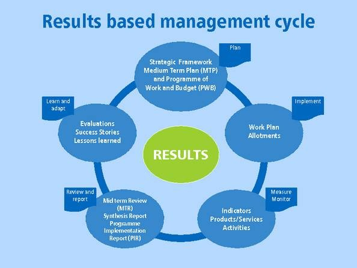

The Results-Based Management (RBM) Framework:

RBM is a management strategy focused on achieving defined results.
Many international development agencies and organizations adopt this approach.
You can find RBM guidance on websites such as UNDP or USAID.
UNDP example
Back